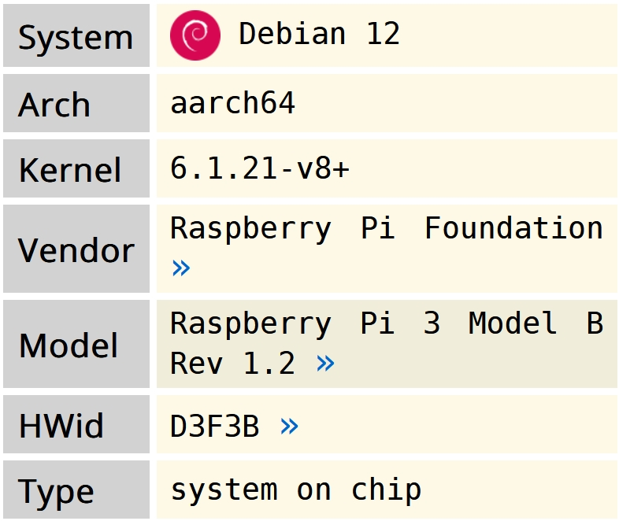

Is this life? Is it real?
© 2024 NVN | Personal Webpage
Backup Server
Host:

INXI log:
System: Kernel: 6.1.21-v8+ arch: aarch64 bits: 64 compiler: N/A parameters: coherent_pool=1M 8250.nr_uarts=0 snd_bcm2835.enable_headphones=0 snd_bcm2835.enable_headphones=0 snd_bcm2835.enable_hdmi=0 bcm2708_fb.fbwidth=720 bcm2708_fb.fbheight=480 bcm2708_fb.fbdepth=16 bcm2708_fb.fbswap=1 vc_mem.mem_base=0x3f000000 vc_mem.mem_size=0x3f600000 root=PARTUUID=e68d129d-02 rootfstype=ext4 rootwait net.ifnames=0 logo.nologo console=tty1 Console: pty pts/0 Distro: Debian GNU/Linux 12 (bookworm) Machine: Type: ARM System: Raspberry Pi 3 Model B Rev 1.2 details: BCM2835 rev: a02082 serial: <filter> CPU: Info: model: N/A variant: cortex-a53 bits: 64 type: MCP arch: ARMv8 family: 8 model-id: 0 stepping: 4 Topology: cpus: 1x cores: 4 smt: N/A cache: L1: 256 KiB desc: d-4x32 KiB; i-4x32 KiB L2: 512 KiB desc: 1x512 KiB Speed (MHz): avg: 1200 min/max: 600/1200 scaling: driver: cpufreq-dt governor: schedutil cores: 1: 1200 2: 1200 3: 1200 4: 1200 bogomips: N/A Features: Use -f option to see features Vulnerabilities: Type: itlb_multihit status: Not affected Type: l1tf status: Not affected Type: mds status: Not affected Type: meltdown status: Not affected Type: mmio_stale_data status: Not affected Type: retbleed status: Not affected Type: spec_store_bypass status: Not affected Type: spectre_v1 mitigation: __user pointer sanitization Type: spectre_v2 status: Not affected Type: srbds status: Not affected Type: tsx_async_abort status: Not affected Graphics: Device-1: bcm2708-fb driver: N/A bus-ID: N/A chip-ID: brcm:soc class-ID: fb Device-2: bcm2835-hdmi driver: N/A bus-ID: N/A chip-ID: brcm:soc class-ID: hdmi Display: server: No display server data found. Headless machine? tty: 120x30 API: OpenGL Message: GL data unavailable in console. Try -G --display Audio: Device-1: bcm2835-hdmi driver: N/A bus-ID: N/A chip-ID: brcm:soc class-ID: hdmi Network: Device-1: bcm2835-sdhci driver: N/A port: N/A bus-ID: N/A chip-ID: brcm:soc class-ID: mmcnr IF: eth0 state: up speed: 100 Mbps duplex: full mac: <filter> Device-2: Microchip (formerly SMSC) SMSC9512/9514 Fast Ethernet Adapter type: USB driver: smsc95xx bus-ID: 1-1.1:3 chip-ID: 0424:ec00 class-ID: ff00 IF: eth0 state: up speed: 100 Mbps duplex: full mac: <filter> Drives: Local Storage: total: 29.72 GiB used: 1.23 GiB (4.1%) ID-1: /dev/mmcblk0 maj-min: 179:0 vendor: SanDisk model: SC32G size: 29.72 GiB block-size: physical: 512 B logical: 512 B type: SSD serial: <filter> scheme: MBR SMART Message: Unknown smartctl error. Unable to generate data. Partition: ID-1: / raw-size: 29.6 GiB size: 29.11 GiB (98.36%) used: 1.19 GiB (4.1%) fs: ext4 dev: /dev/mmcblk0p2 maj-min: 179:2 ID-2: /boot raw-size: 128 MiB size: 127 MiB (99.21%) used: 32 MiB (25.2%) fs: vfat dev: /dev/mmcblk0p1 maj-min: 179:1 Swap: Alert: No swap data was found. Sensors: System Temperatures: cpu: 50.5 C mobo: N/A Fan Speeds (RPM): N/A Info: Processes: 106 Uptime: 28m Memory: 959.5 MiB used: 142.7 MiB (14.9%) Init: systemd v: 252 target: graphical (5) default: graphical tool: systemctl Compilers: N/A Packages: pm: dpkg pkgs: 444 libs: 258 tools: apt,apt-get Shell: Bash v: 5.2.15 running-in: pty pts/0 (SSH) inxi: 3.3.26
HW Probe link